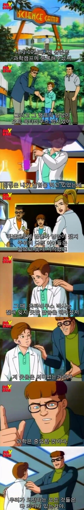
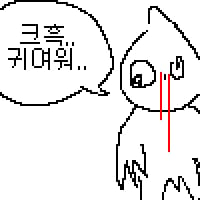
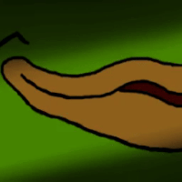
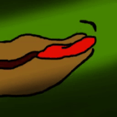

"안전검증이 다 끝난 어린이 과학세트로 폭팔 물질을 만들어? 어떻게?"

"안전검증이 다 끝난 어린이 과학세트로 폭팔 물질을 만들어? 어떻게?"




닥터옥토퍼스: 오늘은 8팔딸을 거하게 쳐야겠다
가능하지
미국은 어린이 과학세트에 방사능물질과 독극물이 들어있던 나라리ㅣ
길버트의 U238
대충 원자력 실험 장난감
모르핀 한 대 꽂아 넣고 좀 쉬거라 피터
그럼 리차드 빠커 보일거같은데
어느 10살 아이가 혼자 폭발물을 만드겟냐마는
초등학생용 과학키트로 위장된 급조 폭발물을 완성시켰구나?
군침이 싹 도노 ㅋㅋㅋ
이제 니 이름은 레드 고블린이여
정답이다! 연금술사!
애들이 뭔 짓을 해도 안전할 거라고 판단한 도구랑 물질로 폭발을 일으킬 악마의 재능..
역시 웹 슈터 거미줄 용액 만드는 재주는 이때부터...ㄷㄷ
전문장비가 없는곳에서 이정도 화학반응을?
저 때는 낭만의 시대라서 그냥 가능했다는거임...
저 아이는 커서 고등학교 과학실에 있는 실험용액만으로 강철보다 강력한 인공거미줄을 합성함
폭팔X
폭발O
수수깡으로 무한동력 만든 초딩 느낌인가
수수깡이 폭발했다고 생각해봐
중국산인가?
밭두렁으로 에탄올뽑음
폭팔은 ㅅㅂ 진짜 개멍청해보인다
저 웃음은 의미없는거란다 (저 새끼들은 니가 어떤 개쩌는짓을 했는지 모른다)
과학은 중요한 것이다 (제발 뉴비님 접지 말아주세요)
우리가 도전하는 모든것들은 다 의미가 있는거야 (널 내 랩에 넣을때까지 무한 트라이를 할 것이다)